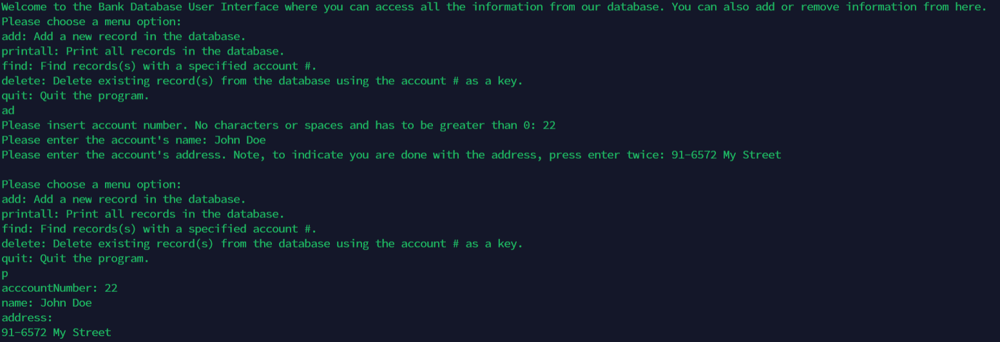

As a final project for ICS 212 Program Structure we had to demonstrate our knowledge of C and C++ through the final project, where we had to make a simplified bank database and gui. In this class we learned C and C++ and different ways to optimize our code through coding standards. We learned the different features of C and C++ which allows us to make the project. Along with that, we learned how to work with a server, by having all of our work being done in UHUNIX, where we had to learn how to upload files and run them.
With this project I further developed my skills with the importance of coding standards and planning. We had rules for the programming in this class, and combined with the editor we had to use, we had to be extra careful to follow the coding standard. Along with that, we learned the importance of planning your code, as to limit the need to go back and fix code, so you can focus on the present code. This was really important for this project because there were so many functions that made up the GUI and database, that if one function broke, you would need to go all the way back and see what was wrong, and there was no guarantee that the function that returned the error had the error in it in the first place. Below is an example of an output and one of the functions in the project.

int llist::findRecord (int accountNumber)
{
int returnVal;
int tempNum;
struct record * tempCurrent = start;
returnVal = 1;
while(tempCurrent != NULL)
{
tempNum = tempCurrent -> accountno;
if(tempNum == accountNumber)
{
returnVal = 0;
std::cout << "acccountNumber: " << tempCurrent -> accountno << "\n";
std::cout << "name: " << tempCurrent -> name << "\n";
std::cout << "address:\n" << tempCurrent -> address << "\n";
}
tempCurrent = tempCurrent -> next;
if(tempCurrent != NULL)
{
tempNum = tempCurrent -> accountno;
}
}
#ifdef debug
std::cout << "\nfindRecord Function Debug\n";
std::cout << "accountNumber: " << accountNumber << "\n";
std::cout << "Returns 0 if found and 1 if did not.\n";
std::cout << "result: " << returnVal << "\n\n";
#endif
return returnVal;
}
Source: Link to original assignment page